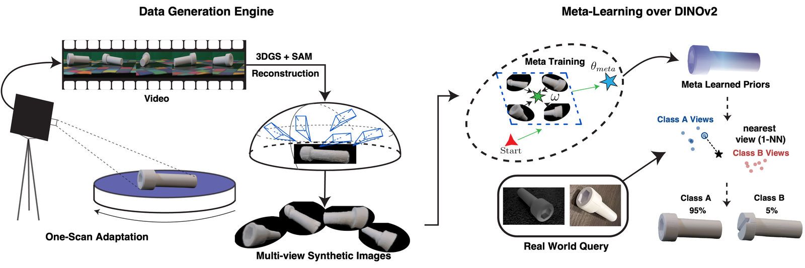

CAD-free fine-grained industrial part recognition via 3D Gaussian Splatting
A short turntable video becomes a renderable 3D twin. A meta-learned head over frozen DINOv2 features recognizes visually similar industrial parts with few or no labeled real images.
